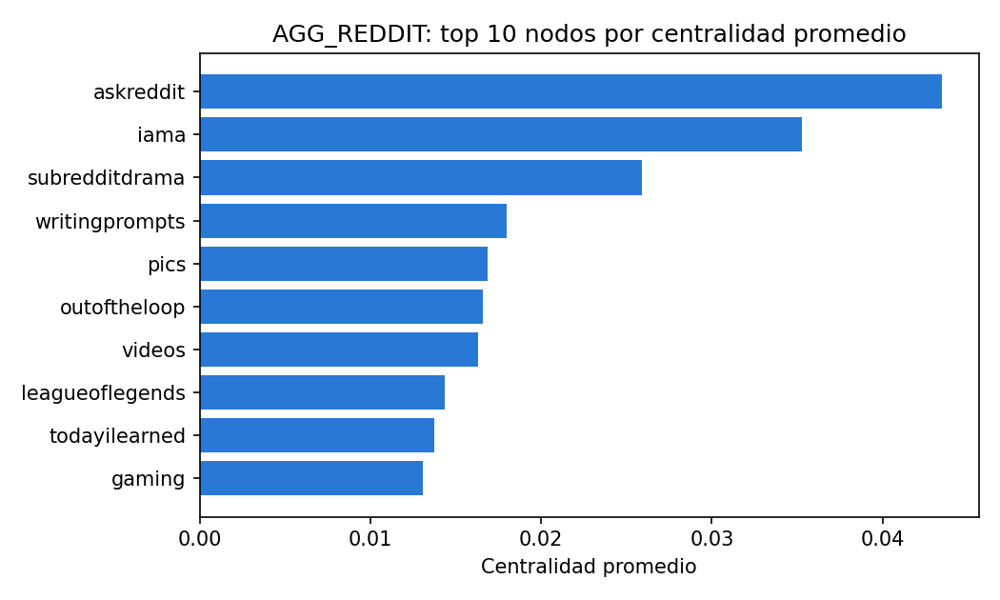
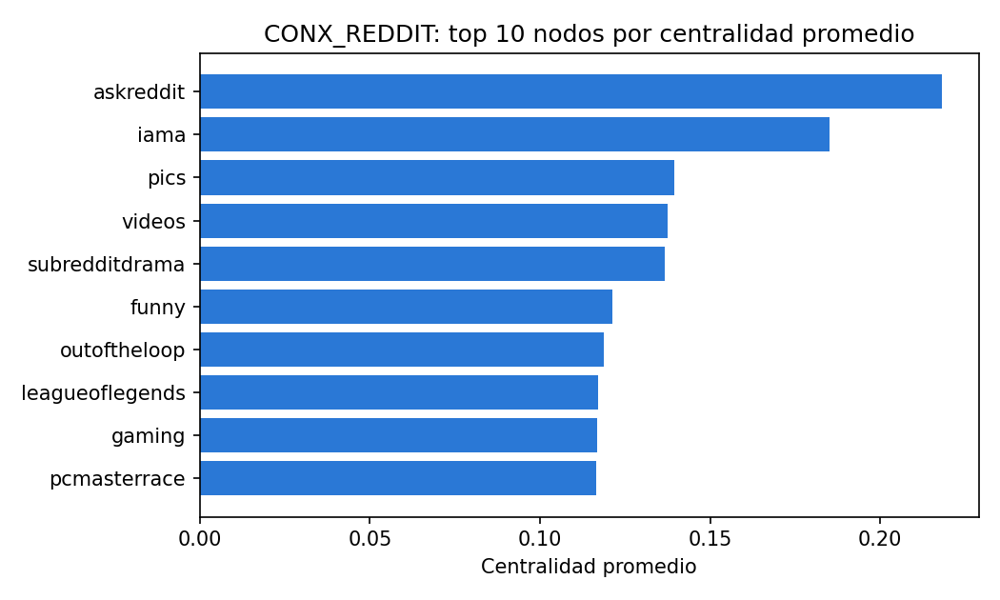
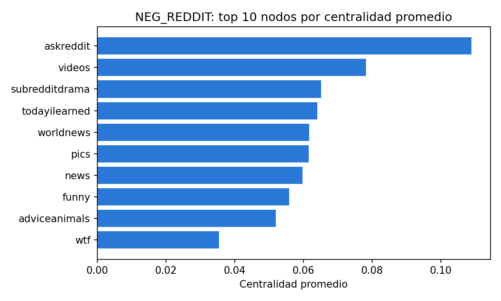

¿Qué subreddits son más centrales?
En AGG_REDDIT, el subreddit con mayor centralidad promedio es askreddit (0.0435). Cada grafo usa un conjunto distinto de medidas de centralidad (ver tabla), por lo que el ranking no es directamente comparable entre grafos.
AGG_REDDIT

| node | degree | pagerank | average |
|---|---|---|---|
| askreddit | 0.0706 | 0.0164 | 0.0435 |
| iama | 0.0567 | 0.0139 | 0.0353 |
| subredditdrama | 0.0504 | 0.0014 | 0.0259 |
| writingprompts | 0.0319 | 0.0040 | 0.0180 |
| pics | 0.0268 | 0.0069 | 0.0168 |
| outoftheloop | 0.0307 | 0.0024 | 0.0166 |
| videos | 0.0247 | 0.0080 | 0.0163 |
| leagueoflegends | 0.0233 | 0.0054 | 0.0144 |
| todayilearned | 0.0228 | 0.0046 | 0.0137 |
| gaming | 0.0226 | 0.0035 | 0.0131 |
CONX_REDDIT

| node | degree | betweenness | closeness | alpha-centrality | pagerank | average |
|---|---|---|---|---|---|---|
| askreddit | 0.1622 | 0.1326 | 0.4683 | 0.3077 | 0.0194 | 0.2181 |
| iama | 0.1436 | 0.1174 | 0.4546 | 0.1921 | 0.0174 | 0.1850 |
| pics | 0.0662 | 0.0030 | 0.4191 | 0.2001 | 0.0089 | 0.1395 |
| videos | 0.0619 | 0.0020 | 0.4253 | 0.1801 | 0.0184 | 0.1376 |
| subredditdrama | 0.1346 | 0.1285 | 0.3856 | 0.0338 | 0.0015 | 0.1368 |
| funny | 0.0520 | 0.0069 | 0.4074 | 0.1370 | 0.0039 | 0.1214 |
| outoftheloop | 0.0791 | 0.0749 | 0.4033 | 0.0336 | 0.0032 | 0.1188 |
| leagueoflegends | 0.0522 | 0.0334 | 0.3859 | 0.1077 | 0.0058 | 0.1170 |
| gaming | 0.0599 | 0.0322 | 0.4042 | 0.0834 | 0.0045 | 0.1169 |
| pcmasterrace | 0.0394 | 0.0115 | 0.3942 | 0.1332 | 0.0038 | 0.1164 |
NEG_REDDIT

| node | degree | in-degree | out-degree | alpha-centrality | pagerank | average |
|---|---|---|---|---|---|---|
| askreddit | 0.0763 | 0.0633 | 0.0130 | 0.3669 | 0.0250 | 0.1089 |
| videos | 0.0240 | 0.0240 | 0.0000 | 0.3343 | 0.0085 | 0.0782 |
| subredditdrama | 0.1207 | 0.0148 | 0.1060 | 0.0815 | 0.0026 | 0.0651 |
| todayilearned | 0.0259 | 0.0259 | 0.0000 | 0.2604 | 0.0077 | 0.0640 |
| worldnews | 0.0276 | 0.0276 | 0.0000 | 0.2441 | 0.0089 | 0.0617 |
| pics | 0.0237 | 0.0237 | 0.0000 | 0.2533 | 0.0071 | 0.0616 |
| news | 0.0251 | 0.0250 | 0.0002 | 0.2413 | 0.0067 | 0.0597 |
| funny | 0.0228 | 0.0221 | 0.0006 | 0.2266 | 0.0069 | 0.0558 |
| adviceanimals | 0.0170 | 0.0170 | 0.0000 | 0.2216 | 0.0045 | 0.0520 |
| wtf | 0.0129 | 0.0129 | 0.0000 | 0.1476 | 0.0037 | 0.0354 |